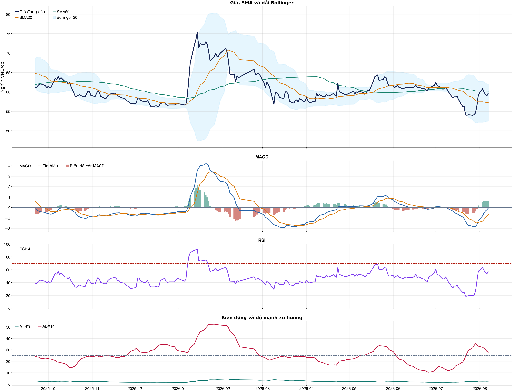
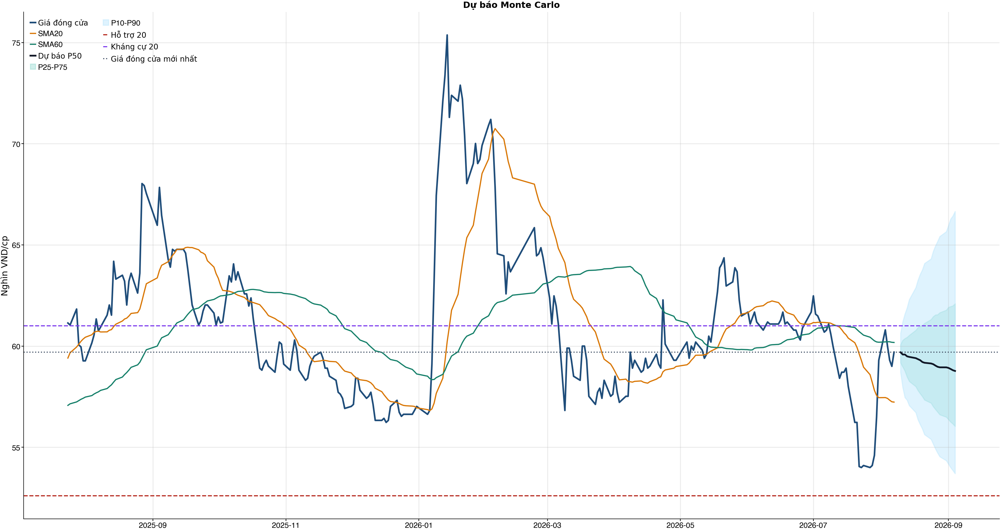
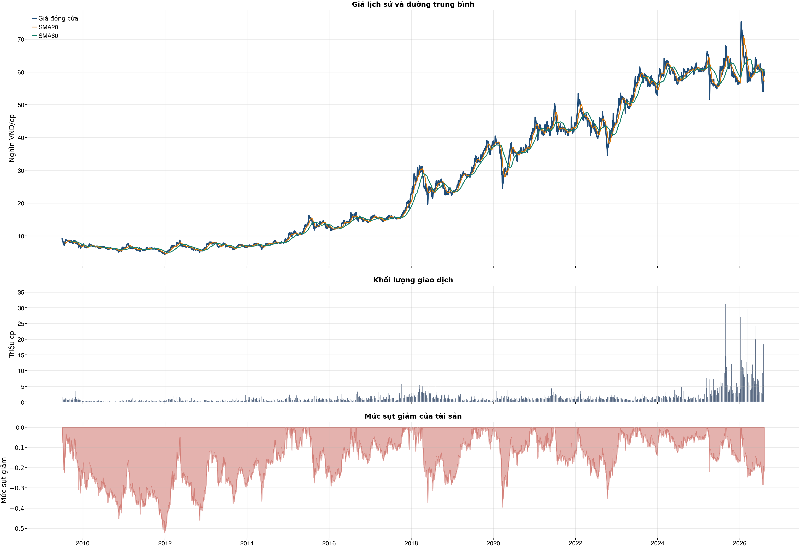

Kết quả chính
Tổng quan cơ bản
Biểu đồ kỹ thuật

Tín hiệu kỹ thuật
| Xu hướng | Cẩn thận | Giá nằm dưới SMA60. |
| MACD | Tích cực | MACD trên signal, histogram dương. |
| RSI14 | Tích cực | RSI 56.7. |
| Bollinger | Ổn định | Giá nằm trong dải Bollinger. |
| ADX | Xu hướng tăng | ADX 27.9, +DI vượt -DI. |
| Thanh khoản | Bình thường | 1.23 lần trung bình. |
| Stochastic | Cực trị | %K 84.5, %D 80.2. |
So sánh mô hình
| XGBoost | 0.503 | AUC 0.468 |
| Logistic | 0.477 | AUC 0.490 |
| Đa số | 0.500 | Mốc so sánh |
Kiểm thử chiến lược ngoài mẫu sau chi phí
| Lợi nhuận ròng | -26.4% | 673 quan sát ngoài mẫu |
| Sharpe | -2.25 | Sau chi phí |
| Mức sụt giảm tối đa | -26.4% | 41 vòng giao dịch |
| Chi phí giả định | 50.0 bps | Một vòng mua và bán |
Mức độ quan trọng của đặc trưng
| return_1d | 11.45 | Mức đóng góp |
| atr_pct_14 | 10.48 | Mức đóng góp |
| market_return_20d | 10.36 | Mức đóng góp |
| market_return_1d | 10.18 | Mức đóng góp |
| rsi_14 | 10.01 | Mức đóng góp |
| macd_pct | 9.87 | Mức đóng góp |
| month_of_year | 9.85 | Mức đóng góp |
| excess_return_20d | 9.68 | Mức đóng góp |
Điều kiện phát hành tín hiệu
| AUC của mô hình | KHÔNG ĐẠT | Điều kiện phát hành tín hiệu |
| Độ chính xác cân bằng của mô hình | KHÔNG ĐẠT | Điều kiện phát hành tín hiệu |
| XGBoost vượt mô hình Logistic đối chứng | KHÔNG ĐẠT | Điều kiện phát hành tín hiệu |
| Xác suất tăng đạt ngưỡng | KHÔNG ĐẠT | Điều kiện phát hành tín hiệu |
| Bối cảnh kỹ thuật đạt ngưỡng | ĐẠT | Điều kiện phát hành tín hiệu |
| Tỷ lệ lợi nhuận/rủi ro đạt ngưỡng | ĐẠT | Điều kiện phát hành tín hiệu |
| Dữ liệu còn mới | ĐẠT | Điều kiện phát hành tín hiệu |
| Có khối lượng vị thế hợp lệ | ĐẠT | Điều kiện phát hành tín hiệu |
| Có kết quả kiểm thử chiến lược ngoài mẫu | ĐẠT | Điều kiện phát hành tín hiệu |
| Mẫu kiểm thử chiến lược đủ lớn | ĐẠT | Điều kiện phát hành tín hiệu |
| Kiểm thử chiến lược có lợi thế ròng | KHÔNG ĐẠT | Điều kiện phát hành tín hiệu |
Quản trị rủi ro
| Rủi ro/lệnh | 1.0% | 1,000,000 VND |
| Mức dừng lỗ | 59.58 | Rủi ro mỗi cổ phiếu 0.42 |
| Mục tiêu 1 | 61.00 | Lợi nhuận/rủi ro 2.37 |
| Mục tiêu 2 | 66.65 | Dự báo/kháng cự |
Phân tích cơ bản
| P/E | 11.98 | 2026-Q2 |
| P/B | 2.01 | 2026-Q2 |
| P/S | 5.88 | 2026-Q2 |
| ROE | 17.9% | 2026-Q2 |
| ROA | 1.7% | 2026-Q2 |
| Gross margin | 66.0% | 2026-Q2 |
| Net margin | 49.1% | 2026-Q2 |
| Debt/Equity | 9.69 | 2026-Q2 |
| Current ratio | 0.00 | 2026-Q2 |
| NPL | 0.6% | 2026-Q2 |
| CASA | 33.9% | 2026-Q2 |
| Dividend yield | 0.0% | 2026-Q2 |
| Market cap | 498,833.8 tỷ | 2026-Q2 |
| Revenue Growth | 47.6% | 2026-Q2 YoY |
| Profit Growth | 64.7% | 2026-Q2 YoY |
| CAPEX | -372.0 tỷ | 2026-Q2 |
| Lợi nhuận sau thuế | 14,551.0 tỷ | 2026-Q2 |
| Tổng tài sản | 2,657,440.6 tỷ | 2026-Q2 |
| Vốn chủ sở hữu | 248,490.5 tỷ | 2026-Q2 |
Tin tức doanh nghiệp
| Trạng thái | Có dữ liệu | research_only |
| Nguồn / số bài | VCI | 50 |
| Bài đủ timestamp | 50 | Chỉ các bài này mới được phép dùng point-in-time |
| Sentiment 5 ngày | 0.00 | 2.0 bài trước cutoff |
| Phương pháp | keyword_heuristic_v1 | Research only; chưa dùng làm tín hiệu mua/bán |
Dự báo ngắn hạn
| 2026-08-10 | 59.69 | P10 58.71 / P90 60.63 |
| 2026-08-11 | 59.58 | P10 57.96 / P90 61.20 |
| 2026-08-12 | 59.58 | P10 57.46 / P90 61.59 |
| 2026-08-13 | 59.49 | P10 57.33 / P90 61.89 |
| 2026-08-14 | 59.46 | P10 57.06 / P90 62.30 |
| 2026-08-17 | 59.40 | P10 56.72 / P90 62.89 |
| 2026-08-18 | 59.35 | P10 56.36 / P90 63.26 |
| 2026-08-19 | 59.30 | P10 56.13 / P90 63.55 |
Biểu đồ dự báo

Lịch sử giá và mức sụt giảm

Báo cáo dùng để học tập và lập kịch bản, không phải khuyến nghị mua/bán.
Phân tích AI có kiểm chứng
Trạng thái quyết định: NO_EDGE
Tóm tắt: ML decision hiện giữ nguyên NO_EDGE. News Reader đã trích đoạn có nguồn của 4 bài để phân loại chủ đề (ket_qua_kinh_doanh: 4, co_tuc_va_hanh_dong_doanh_nghiep: 3, vi_mo: 3, nganh: 4, rui_ro: 1), nhưng các trích đoạn này không tạo bằng chứng mới cho quyết định đầu tư.
Kỹ thuật: Artifact kỹ thuật: bias Hồi phục / nghiêng tăng; điểm 4. Chi tiết artifact: Xu hướng: Cẩn thận (Giá nằm dưới SMA60.); MACD: Tích cực (MACD trên signal, histogram dương.); RSI14: Tích cực (RSI 56.7.); Bollinger: Ổn định (Giá nằm trong dải Bollinger.); ADX: Xu hướng tăng (ADX 27.9, +DI vượt -DI.); Thanh khoản: Bình thường (1.23 lần trung bình.); Stochastic: Cực trị (%K 84.5, %D 80.2.)
Cơ bản: Artifact cơ bản: Vietcombank; kỳ 2026-Q2; P/E 11.98; P/B 2.01; ROE 17.9%; ROA 1.7%; Debt/Equity 9.69; Revenue Growth 47.6%; Profit Growth 64.7%.
Tin tức: Đã đọc trích đoạn giới hạn của 4 bài; phân nhóm rule-based: ket_qua_kinh_doanh: 4, co_tuc_va_hanh_dong_doanh_nghiep: 3, vi_mo: 3, nganh: 4, rui_ro: 1. Tác động cần kiểm chứng: Đối chiếu doanh thu/lợi nhuận trong bài với BCTC và kỳ vọng thị trường. Kiểm tra ngày GDKHQ, tỷ lệ, nguồn chi trả và nguy cơ pha loãng trước khi đánh giá tác động. Đối chiếu thời điểm công bố và kênh tác động lãi suất/tỷ giá với mô hình kinh doanh. So sánh tín hiệu ngành với thị phần, nhu cầu và đối thủ trước khi suy luận cho riêng doanh nghiệp. Xác minh công bố chính thức, phạm vi ảnh hưởng và khả năng định lượng rủi ro. Đây không phải sentiment hay dự báo tác động giá.
Live research: Live snapshot lấy lúc 2026-08-09T08:38:35.762692+00:00; News Reader đọc được 4 bài. ML có 5 lý do guard và vẫn là NO_EDGE. Không dùng tin live để train/backtest.
Rủi ro cần kiểm chứng
- ML guard: AUC 0.468 < 0.540
- ML guard: Balanced accuracy 0.503 < 0.520
- ML guard: XGBoost chưa vượt logistic baseline: AUC XGBoost=0.4677033948325432, AUC logistic=0.4902229584356734
- ML guard: Probability 50.8% < 55.0%
- ML guard: Lợi thế OOS ròng không đạt: return=-0.26417005000000016, Sharpe=-2.2527039312868156
- News Reader: Đối chiếu doanh thu/lợi nhuận trong bài với BCTC và kỳ vọng thị trường.
- News Reader: Kiểm tra ngày GDKHQ, tỷ lệ, nguồn chi trả và nguy cơ pha loãng trước khi đánh giá tác động.
- News Reader: Đối chiếu thời điểm công bố và kênh tác động lãi suất/tỷ giá với mô hình kinh doanh.
- News Reader: So sánh tín hiệu ngành với thị phần, nhu cầu và đối thủ trước khi suy luận cho riêng doanh nghiệp.
- News Reader: Xác minh công bố chính thức, phạm vi ảnh hưởng và khả năng định lượng rủi ro.
- Chỉ lưu trích đoạn giới hạn để kiểm chứng nguồn; không lưu hay hiển thị toàn văn bài báo.
- Phân nhóm là keyword rule-based để định tuyến research, không phải sentiment hay dự báo tác động giá.
- Dữ liệu News Reader chỉ phục vụ research/report; không dùng làm feature train/backtest khi chưa có lịch sử available_at point-in-time.
- Tin live/trích đoạn cần mở URL gốc để kiểm chứng bối cảnh, số liệu và thời điểm trước khi sử dụng.
Bằng chứng
- ML decision artifact: NO_EDGE. AUC 0.468 < 0.540
- ML decision artifact: NO_EDGE. Balanced accuracy 0.503 < 0.520
- ML decision artifact: NO_EDGE. XGBoost chưa vượt logistic baseline: AUC XGBoost=0.4677033948325432, AUC logistic=0.4902229584356734
- ML decision artifact: NO_EDGE. Probability 50.8% < 55.0%
- ML decision artifact: NO_EDGE. Lợi thế OOS ròng không đạt: return=-0.26417005000000016, Sharpe=-2.2527039312868156
- News Reader [bnews.vn]: Chứng khoán hôm nay: Khuyến nghị mua DMX, POW và chờ mua VCB - bnews.vn | nhóm: ket_qua_kinh_doanh, co_tuc_va_hanh_dong_doanh_nghiep, vi_mo, nganh (2026-08-07T01:19:00+00:00)
- News Reader [nguoiquansat.vn]: Cổ phiếu đáng chú ý ngày 7/8: DMX, POW, VCB - nguoiquansat.vn | nhóm: ket_qua_kinh_doanh, co_tuc_va_hanh_dong_doanh_nghiep, vi_mo, nganh (2026-08-06T16:40:01+00:00)
- News Reader [dautucophieu.net]: Cập nhật cổ phiếu VCB – LNTT Q2 tăng 58%, vượt trội so với dự báo - dautucophieu.net | nhóm: ket_qua_kinh_doanh, nganh, rui_ro (2026-08-05T04:45:15+00:00)
- News Reader [VietstockFinance]: VCB: Khuyến nghị MUA với giá mục tiêu 81,400 đồng/cổ phiếu - VietstockFinance | nhóm: ket_qua_kinh_doanh, co_tuc_va_hanh_dong_doanh_nghiep, vi_mo, nganh (2026-08-06T05:45:18+00:00)
Báo cáo chỉ tổng hợp artifact đã lưu để nghiên cứu; không phải khuyến nghị mua/bán. Quyết định và vị thế vẫn bị khóa theo signal_decision.json.
Tin web đã lấy
| Nguồn | Tiêu đề | Thời điểm | Link |
|---|---|---|---|
| diendandoanhnghiep.vn | Ngân hàng nhóm Big 3 trước thềm nâng tỷ lệ sở hữu vốn Nhà nước - diendandoanhnghiep.vn | 2026-08-07T21:04:01+00:00 | Mở nguồn |
| bnews.vn | Chứng khoán hôm nay: Khuyến nghị mua DMX, POW và chờ mua VCB - bnews.vn | 2026-08-07T01:19:00+00:00 | Mở nguồn |
| nguoiquansat.vn | Cổ phiếu đáng chú ý ngày 7/8: DMX, POW, VCB - nguoiquansat.vn | 2026-08-06T16:40:01+00:00 | Mở nguồn |
| dautucophieu.net | Cập nhật cổ phiếu VCB – LNTT Q2 tăng 58%, vượt trội so với dự báo - dautucophieu.net | 2026-08-05T04:45:15+00:00 | Mở nguồn |
| VietstockFinance | VCB: Khuyến nghị MUA với giá mục tiêu 81,400 đồng/cổ phiếu - VietstockFinance | 2026-08-06T05:45:18+00:00 | Mở nguồn |
| 24HMoney | Cổ phiếu HPG, VCB, VCI, CTD - Có nên mua? Lãi suất liên ngân hàng qua đêm giảm dưới 1% nghĩa là gì? - 24HMoney | 2026-08-04T04:06:24+00:00 | Mở nguồn |
| Vietcap Trading | VCB: Nâng nới trần giới hạn tiền gửi, cổ phiếu ngân hàng sẽ thăng hoa? - Chi tiết bài viết - Vietcap Trading | 2026-08-02T21:05:00+00:00 | Mở nguồn |
| Việt Báo | VHM, VCB, TCB, STB, FPT, GMD, PHP vào danh mục đầu tư tháng 8? - Việt Báo | 2026-08-05T22:01:39+00:00 | Mở nguồn |
News Reader: bài đã đọc và trích đoạn
| Nguồn | Tiêu đề | Nhóm | Thời điểm | Trích đoạn đã đọc | Link |
|---|---|---|---|---|---|
| bnews.vn | Chứng khoán hôm nay: Khuyến nghị mua DMX, POW và chờ mua VCB - bnews.vn | ket_qua_kinh_doanh, co_tuc_va_hanh_dong_doanh_nghiep, vi_mo, nganh | 2026-08-07T01:19:00+00:00 | Xem trích đoạnBNEWS Các công ty chứng khoán khuyến nghị mua cổ phiếu DMX và POW nhờ triển vọng tăng trưởng tích cực, trong khi VCB được khuyến nghị chờ mua. Các công ty chứng khoán vừa công bố báo cáo phân tích đối với cổ phiếu DMX, POW và VCB, trong đó khuyến nghị mua đối với DMX và POW nhờ triển vọng tăng trưởng tích cực, trong khi VCB được khuyến nghị chờ mua do cổ phiếu đang chịu áp lực chốt lời sau nhịp hồi phục. Đối với CTCP Đầu tư Điện Máy Xanh (HoSE: DMX), Công ty Chứng khoán ACB (ACBS) khuyến nghị mua với giá mục tiêu 93.600 đồng/cổ phiếu đến cuối năm 2026, tương ứng tổng mức sinh lời kỳ vọng khoảng 22%, bao gồm lợi suất cổ tức khoảng 5%. Trong phiên giao dịch đầu tiên trên HoSE ngày 6/8, cổ phiếu DMX chào sàn ở mức 80.000 đồng/cổ phiếu và đóng cửa tại 82.000 đồng/cổ phiếu, tăng 2,5%, qua đó đưa doanh nghiệp gia nhập nhóm có vốn hóa trên 100.000 tỷ đồng. Theo ACBS, mức định giá hiện tại của DMX tương ứng P/E 12,9 lần theo kế hoạch lợi nhuận năm 2026 và 10,3 lần theo dự phóng của công ty chứng khoán, thấp hơn mức trung vị 13-14 lần của các doanh nghiệp cùng ngành trên thế giới. ACBS dự báo DMX có thể đạt 9.243 tỷ đồng lợi nhuận sau thuế trong năm 2026, tăng 51,5% theo cơ sở so sánh tương đương (LFL) và cao hơn khoảng 26% so với kế hoạch doanh nghiệp. Động lực tăng trưởng đến từ nhu cầu tiêu dùng phục hồi, mở rộng các chương trình tài chính tiêu dùng, cải thiện biên lợi nhuận và tăng trưởng của chuỗi Era Blue tại Indonesia. Đối với Tổng Công ty Điện lực Dầu khí Việt Nam - PV Power (POW), ACBS tiếp tục duy trì khuyến nghị mua, đồng thời nâng giá mục tiêu năm 2026 lên 18.400 đồng/cổ phiếu, tương ứng tổng mức sinh lời kỳ vọng 37,3%. Theo ACBS, triển vọng của POW được cải thiện nhờ sản lượng huy động tại các nhà máy điện khí tăng khi nguồn cung khí được đảm bảo hơn, nhu cầu tiêu thụ điện phục hồi và chu kỳ El Nino đến gần. Ngoài ra, việc ghi nhận 1.600 tỷ đồng chênh lệch tỷ giá từ VA1 cùng 381 tỷ đồng chi phí vận hành, bảo dưỡng các nhà máy Cà Mau 1 và 2 từ EVN cũng hỗ trợ đáng kể cho lợi nhuận. ACBS dự báo doanh thu năm 2026 của POW đạt 54.739 tỷ đồng, tăng 11% so với dự báo trước, trong khi lợi nhuận sau thuế đạt 7.123 tỷ đồng. Kết quả kinh doanh quý II/2026 của POW cũng vượt kỳ vọng khi doanh thu đạt 20.308 tỷ đồng, tăng 116% so với cùng kỳ và lợi nhuận sau thuế đạt 3.708 tỷ đồng, tăng 387%. Lũy kế 6 tháng đầu năm, lợi nhuận sau thuế đạt 5.008 tỷ đồng, tăng 306% so | Mở nguồn |
| nguoiquansat.vn | Cổ phiếu đáng chú ý ngày 7/8: DMX, POW, VCB - nguoiquansat.vn | ket_qua_kinh_doanh, co_tuc_va_hanh_dong_doanh_nghiep, vi_mo, nganh | 2026-08-06T16:40:01+00:00 | Xem trích đoạnCông ty chứng khoán phân tích và đưa ra nhận định mua, bán đối với các cổ phiếu DMX, POW, VCB. Điện Máy Xanh (DMX): Khuyến nghị mua, giá mục tiêu 93.600 đồng/cp Ngày 6/8/2026, 1,27 tỷ cổ phiếu DMX của CTCP Đầu tư Điện Máy Xanh chính thức giao dịch phiên đầu tiên trên Sở Giao dịch Chứng khoán TP. HCM (HoSE). Cổ phiếu chào sàn ở mức 80.000 đồng/cp và đóng cửa tại 82.000 đồng/cp, tăng 2,5%. Với mức giá kết phiên, Điện Máy Xanh chính thức gia nhập nhóm 24 doanh nghiệp niêm yết có vốn hóa trên 100.000 tỷ đồng. Theo Chứng khoán ACB (ACBS), mức giá hiện tại tương ứng P/E 12,9 lần dựa trên kế hoạch lợi nhuận sau thuế (LNST) năm 2026 và 10,3 lần theo dự phóng của ACBS, thấp hơn mức P/E trung vị khoảng 13-14 lần của các doanh nghiệp cùng ngành trên thế giới và xấp xỉ mức 12 lần của VN-Index. Sử dụng phương pháp định giá P/E với mức mục tiêu 12 lần, ACBS khuyến nghị mua đối với cổ phiếu DMX, đồng thời đưa ra giá mục tiêu 93.600 đồng/cp đến cuối năm 2026, tương ứng tổng mức sinh lời kỳ vọng 22%, bao gồm lợi suất cổ tức khoảng 5%. Năm 2026, Điện Máy Xanh đặt kế hoạch 122.300 tỷ đồng doanh thu thuần và 7.350 tỷ đồng LNST, lần lượt tăng 14,5% và 20,5% so với cùng kỳ trên cơ sở so sánh tương đương (LFL, không bao gồm An Khang và AvaKids nhưng bao gồm đóng góp của Thợ Điện Máy Xanh). Theo ACBS, kết quả kinh doanh tích cực trong 6 tháng đầu năm củng cố kỳ vọng doanh nghiệp có thể vượt kế hoạch năm. Cụ thể, doanh thu thuần đạt 65.280 tỷ đồng, tăng 31% so với cùng kỳ, trong khi LNST đạt 4.876 tỷ đồng, tăng 62%. Động lực tăng trưởng đến từ việc mở rộng các chương trình tài chính tiêu dùng (tăng 49% so với cùng kỳ), nhu cầu tiêu dùng phục hồi, giá bán sản phẩm tăng nhờ tích hợp thêm công nghệ mới và tình trạng thiếu hụt chip nhớ. Bên cạnh đó, biên lợi nhuận được cải thiện nhờ tỷ trọng các sản phẩm có biên lợi nhuận cao gia tăng và doanh nghiệp chủ động chuẩn bị nguồn hàng. Ở thị trường Indonesia, liên doanh Era Blue tiếp tục mở rộng mạng lưới, đạt 261 cửa hàng vào cuối tháng 6/2026, tăng 146 cửa hàng so với cùng kỳ và tăng 80 cửa hàng so với đầu năm. Tuy nhiên, đóng góp lợi nhuận của liên doanh này vẫn ở mức khiêm tốn, dù đã tăng gấp đôi so với cùng kỳ. ACBS dự phóng DMX có thể ghi nhận 9.243 tỷ đồng LNST trong năm 2026, tăng 51,5% theo cơ sở LFL và cao hơn khoảng 26% so với kế hoạch doanh nghiệp đề ra. Về dài hạn, Điện Máy Xanh đặt mục tiêu tăng trưởng kép (CAGR) giai đoạn | Mở nguồn |
| dautucophieu.net | Cập nhật cổ phiếu VCB – LNTT Q2 tăng 58%, vượt trội so với dự báo - dautucophieu.net | ket_qua_kinh_doanh, nganh, rui_ro | 2026-08-05T04:45:15+00:00 | Xem trích đoạnChứng khoán Tổng quan về TTCK CK Phái sinh Chứng quyền Tin tức Cập nhật KQKD Doanh nghiệp Thế giới Tài chính – Ngân hàng Hàng hóa Sống Phân tích CK Báo cáo của Nguyễn Văn Nguyên Phân tích cơ bản Phân tích kỹ thuật Cập nhật ngành Sự kiện: Công bố KQKD Q2/2026 vào ngày 30/7/2026 VCB đã công bố KQKD Q2/2026 mạnh, vượt đáng kể dự báo của chúng tôi ở cả thu nhập cốt lõi và thu nhập một lần. Đồ thị cổ phiếu VCB phiên giao dịch ngày 05/08/2026 LNTT Q2 tăng 58% so với cùng kỳ lên 17,4 nghìn tỷ đồng, vượt đáng kể dự báo của chúng tôi nhờ thu nhập cốt lõi tăng 31% so với cùng kỳ và khoản lãi một lần khoảng 3 nghìn tỷ đồng, không nằm trong mô hình dự báo trước đó của chúng tôi. LNTT 6 tháng đầu năm 2026 đạt 21,9 nghìn tỷ đồng, tăng 33% so với cùng kỳ và hoàn thành 59% dự báo cả năm của chúng tôi. Thu nhập cốt lõi tích cực chủ yếu nhờ tỷ lệ NIM mở rộng mặc dù chi phí huy động tăng mạnh, trong khi chất lượng tài sản tốt giúp giảm chi phí trích lập dự phòng. Tăng trưởng tín dụng chậm lại trong Q2, tăng 5% kể từ đầu năm Tổng tín dụng chỉ tăng 5% kể từ đầu năm, tăng chưa tới 1 điểm phần trăm so với Q1/2026 và hoàn thành 50% mục tiêu tăng trưởng tín dụng cả năm của VCB. Xin nhắc lại, VCB được cấp hạn mức tăng trưởng tín dụng khoảng 13% cho năm 2026 nhưng chỉ đặt kế hoạch tăng trưởng khoảng 10%. Tăng trưởng tín dụng vẫn thấp hơn bình quân ngành ở mức 8,5%. Tổng huy động tăng tốc trong Q2/2026, tăng 4% kể từ đầu năm (sau khi chỉ tăng 0,7% trong Q1/2026). Tỷ lệ LDR điều chỉnh (bao gồm TPDN ở tử số và giấy tờ có giá ở mẫu số) cải thiện nhẹ lên 100% từ 103% trong quý trước, trong khi tỷ lệ LDR thuần cũng cải thiện lên 102% từ 104%, mặc dù cả hai chỉ số này vẫn ở mức cao. Tiền gửi KBNN nhìn chung ổn định so với quý trước ở mức khoảng 185 nghìn tỷ đồng, tương đương khoảng 10% tổng dư nợ cho vay. Tỷ lệ NIM cải thiện 11 điểm cơ bản so với quý trước lên 2,97% Tỷ lệ NIM mở rộng 11 điểm cơ bản so với quý trước và tăng 33 điểm cơ bản so với cùng kỳ lên 2,97%, sát kế hoạch của VCB (3%). Đây là một bất ngờ tích cực trong bối cảnh chi phí huy động cũng tăng mạnh 40 điểm cơ bản so với quý trước và tăng 70 điểm cơ bản so với cùng kỳ lên gần 3%. Phần tăng lên của lợi suất tài sản nhiều hơn phần gia tăng của chi phí huy động, trong đó lợi suất cho vay tăng 70 điểm cơ bản so với quý trước và tăng 150 điểm cơ bản so với cùng kỳ. Trong khi đó, tỷ lệ tiền gửi không kỳ hạn giảm 20 điểm cơ bản so | Mở nguồn |
| VietstockFinance | VCB: Khuyến nghị MUA với giá mục tiêu 81,400 đồng/cổ phiếu - VietstockFinance | ket_qua_kinh_doanh, co_tuc_va_hanh_dong_doanh_nghiep, vi_mo, nganh | 2026-08-06T05:45:18+00:00 | Xem trích đoạnChủ Nhật, 09/08/2026 Vietstock ( VN | EN ) Đấu trường chứng khoán Diễn đàn IR Awards Dịch vụ Vietstock ( VN | EN ) Đấu trường chứng khoán Diễn đàn IR Awards Dịch vụ Đấu trường chứng khoán Diễn đàn IR Awards Dịch vụ Vĩ mô Dữ liệu Cập nhật chỉ số vĩ mô mới nhất 1. Tài khoản quốc gia (GDP) Tổng sản phẩm trong nước (GDP) 2. Chỉ số giá và lạm phát Chỉ số giá và lạm phát cơ bản 3. Thị trường lao động và việc làm Chi tiết Thị trường lao động và việc làm 4. Thị trường bán lẻ Thị trường bán lẻ hàng hóa và dịch vụ 5. Sản xuất công nghiệp Chi tiết sản xuất toàn ngành công nghiệp 6. Bất động sản và xây dựng Chi tiết Bất động sản và Xây dựng 7. Cán cân thanh toán quốc tế Tổng hợp giao dịch kinh tế quốc tế 8. Chính sách tài khóa và tài chính quốc gia Chi tiết quản lý thu, chi ngân sách và nợ công, điều tiết kinh tế 9. Chính sách tiền tệ Chính sách tiền tệ: điều tiết cung tiền, lãi suất, ổn định giá 10. Đầu tư trực tiếp nước ngoài (FDI) Vốn nước ngoài vào sản xuất, kinh doanh nội địa 11. Xuất nhập khẩu theo quốc gia và hàng hóa Chi tiết xuất nhập khẩu theo quốc gia và hàng hóa cụ thể Báo cáo phân tích Báo cáo phân tích vĩ mô mới nhất Thuật ngữ Các thuật ngữ vĩ mô Tin tức Tin tức thị trường vĩ mô mới nhất Ngành Dữ liệu ngành Tổng quan ngành Ngành chi tiết Thông tin chi tiết một ngành Năng lượng Chi tiết ngành Năng lượng Nguyên vật liệu Chi tiết ngành Nguyên vật liệu Công nghiệp Chi tiết ngành Công nghiệp Tiêu dùng không thiết yếu Chi tiết ngành Tiêu dùng không thiết yếu Tiêu dùng thiết yếu Chi tiết ngành Tiêu dùng thiết yếu Chăm sóc sức khỏe Chi tiết ngành Chăm sóc sức khỏe Tài chính Chi tiết ngành Tài chính Công nghệ thông tin Chi tiết ngành Công nghệ thông tin Dịch vụ truyền thông Chi tiết ngành Dịch vụ truyền thông Tiện ích Chi tiết ngành Tiện ích Bất động sản Chi tiết ngành Bất động sản Doanh nghiệp Doanh nghiệp A-Z Danh sách doanh nghiệp đầy đủ Công ty phi tài chính Danh sách doanh nghiệp phi tài chính Ngân hàng Danh sách ngân hàng Công ty chứng khoán Danh sách công ty chứng khoán Công ty bảo hiểm Danh sách công ty bảo hiểm Công ty quản lý quỹ Danh sách công ty quản lý quỹ Công ty kiểm toán Danh sách công ty kiểm toán Hồ sơ lãnh đạo Hồ sơ lãnh đạo doanh nghiệp và người có liên quan Lịch sự kiện Sự kiện doanh nghiệp Niêm yết Sự kiện niêm yết cổ phiếu Cổ tức và phát hành thêm Sự kiện doanh nghiệp trả cổ tức và phát hành thêm Đại hội đồng cổ đông Sự kiện đại hội cổ | Mở nguồn |
Chi tiết báo cáo tài chính
Kết quả kinh doanh — 4 kỳ gần nhất
Hiển thị 35 dòng đầu; mở CSV đầy đủ.
| Khoản mục | 2026-Q2 | 2026-Q1 | 2025-Q4 | 2025-Q3 |
|---|---|---|---|---|
| Tổng lợi nhuận/lỗ trước thuế | 17,419.7 tỷ | 11,802.7 tỷ | 10,886.7 tỷ | 11,239.1 tỷ |
| Chi phí thuế TNDN hiện hành | -2,871.6 tỷ | -2,343.8 tỷ | -1,269.0 tỷ | -2,217.0 tỷ |
| Chi phí thuế TNDN hoãn lại | 2.8 tỷ | 3.2 tỷ | -984.4 tỷ | 3.4 tỷ |
| Chi phí thuế thu nhập doanh nghiệp | -2,868.8 tỷ | -2,340.6 tỷ | -2,253.4 tỷ | -2,213.6 tỷ |
| Lợi nhuận sau thuế | 14,551.0 tỷ | 9,462.1 tỷ | 8,633.3 tỷ | 9,025.6 tỷ |
| Lợi ích của cổ đông thiểu số | -8.7 tỷ | -5.5 tỷ | -4.2 tỷ | -5.1 tỷ |
| Cổ đông của Công ty mẹ | 14,542.3 tỷ | 9,456.6 tỷ | 8,629.0 tỷ | 9,020.5 tỷ |
| Lãi cơ bản trên cổ phiếu (VND) | 0.0 tỷ | 0.0 tỷ | 0.0 tỷ | 0.0 tỷ |
| Lãi trên cổ phiếu pha loãng (VND) | 0.0 tỷ | 0.0 tỷ | 0.0 tỷ | 0.0 tỷ |
| Thu nhập lãi và các khoản thu nhập tương tự | 36,472.8 tỷ | 32,092.0 tỷ | 28,710.8 tỷ | 26,713.3 tỷ |
| Chi phí lãi và các chi phí tương tự | -17,331.0 tỷ | -14,440.9 tỷ | -12,444.0 tỷ | -12,056.1 tỷ |
| Thu nhập lãi thuần | 19,141.8 tỷ | 17,651.1 tỷ | 16,266.8 tỷ | 14,657.2 tỷ |
| Thu nhập từ dịch vụ | 2,939.2 tỷ | 2,936.1 tỷ | 3,288.2 tỷ | 3,028.3 tỷ |
| Chi phí dịch vụ | -2,079.6 tỷ | -1,992.7 tỷ | -2,423.6 tỷ | -2,089.9 tỷ |
| Lãi/Lỗ thuần từ hoạt động dịch vụ | 859.7 tỷ | 943.4 tỷ | 864.6 tỷ | 938.3 tỷ |
| Lãi/(lỗ) thuần từ hoạt động kinh doanh ngoại hối và vàng | 2,154.3 tỷ | 1,677.7 tỷ | 1,226.4 tỷ | 1,279.5 tỷ |
| Lãi/(lỗ) thuần từ mua bán chứng khoán kinh doanh | 94.9 tỷ | -7.1 tỷ | 30.9 tỷ | 106.4 tỷ |
| Lãi/(lỗ) thuần từ mua bán chứng khoán đầu tư | 2.5 tỷ | 0.0 tỷ | 0.0 tỷ | 0.0 tỷ |
| Thu nhập khác | 4,687.4 tỷ | 1,267.6 tỷ | 1,677.1 tỷ | 1,159.8 tỷ |
| Chi phí khác | -628.9 tỷ | -410.5 tỷ | -833.1 tỷ | -228.0 tỷ |
| Lãi/(lỗ) thuần từ hoạt động khác | 4,058.6 tỷ | 857.1 tỷ | 844.0 tỷ | 931.8 tỷ |
| Thu nhập từ cổ tức | 59.9 tỷ | 57.6 tỷ | 36.8 tỷ | 138.8 tỷ |
| Tổng thu nhập hoạt động | 26,371.6 tỷ | 21,179.8 tỷ | 19,269.5 tỷ | 18,052.1 tỷ |
| Chi phí quản lý doanh nghiệp | -8,449.3 tỷ | -6,884.1 tỷ | -7,528.2 tỷ | -6,037.4 tỷ |
| Lợi nhuận thuần hoạt động trước khi trích lập dự phòng tổn thất tín dụng | 17,922.3 tỷ | 14,295.8 tỷ | 11,741.3 tỷ | 12,014.7 tỷ |
| Trích lập dự phòng tổn thất tín dụng | -502.6 tỷ | -2,493.1 tỷ | -854.7 tỷ | -775.6 tỷ |
Bảng cân đối kế toán — 4 kỳ gần nhất
Hiển thị 35 dòng đầu; mở CSV đầy đủ.
| Khoản mục | 2026-Q2 | 2026-Q1 | 2025-Q4 | 2025-Q3 |
|---|---|---|---|---|
| Tiền mặt, vàng bạc, đá quý | 14,602.1 tỷ | 12,931.0 tỷ | 15,542.8 tỷ | 12,909.5 tỷ |
| Tài sản cố định | 17,937.9 tỷ | 8,131.8 tỷ | 8,163.3 tỷ | 8,141.0 tỷ |
| Tài sản cố định hữu hình | 10,376.4 tỷ | 5,622.9 tỷ | 5,618.8 tỷ | 5,671.4 tỷ |
| Nguyên giá TSCĐ hữu hình | 22,603.9 tỷ | 16,578.2 tỷ | 16,271.9 tỷ | 16,620.3 tỷ |
| Hao mòn TSCĐ hữu hình | -12,227.5 tỷ | -10,955.4 tỷ | -10,653.1 tỷ | -10,948.9 tỷ |
| Tài sản cố định thuê tài chính | 0.0 tỷ | 0.0 tỷ | 0.0 tỷ | 0.0 tỷ |
| Nguyên giá TSCĐ thuê tài chính | 0.0 tỷ | 0.0 tỷ | 0.0 tỷ | 0.0 tỷ |
| Hao mòn TSCĐ thuê tài chính | 0.0 tỷ | 0.0 tỷ | 0.0 tỷ | 0.0 tỷ |
| Tài sản cố định vô hình | 7,561.5 tỷ | 2,508.9 tỷ | 2,544.5 tỷ | 2,469.6 tỷ |
| Nguyên giá TSCĐ vô hình | 10,478.2 tỷ | 5,287.1 tỷ | 5,284.8 tỷ | 5,111.9 tỷ |
| Hao mòn TSCĐ vô hình | -2,916.6 tỷ | -2,778.2 tỷ | -2,740.3 tỷ | -2,642.3 tỷ |
| Bất động sản đầu tư | 0.0 tỷ | 0.0 tỷ | 0.0 tỷ | 0.0 tỷ |
| Nguyên giá bất động sản đầu tư | 0.0 tỷ | 0.0 tỷ | 0.0 tỷ | 0.0 tỷ |
| Hao mòn bất động sản đầu tư | 0.0 tỷ | 0.0 tỷ | 0.0 tỷ | 0.0 tỷ |
| Góp vốn, đầu tư dài hạn | 1,711.5 tỷ | 3,510.4 tỷ | 2,260.7 tỷ | 2,418.9 tỷ |
| Đầu tư vào công ty con | 0.0 tỷ | 0.0 tỷ | 0.0 tỷ | 0.0 tỷ |
| Đầu tư vào công ty liên doanh | 197.4 tỷ | 1,996.3 tỷ | 746.6 tỷ | 904.8 tỷ |
| Đầu tư dài hạn khác | 1,589.1 tỷ | 1,589.1 tỷ | 1,589.1 tỷ | 1,589.1 tỷ |
| Dự phòng giảm giá đầu tư dài hạn | -75.0 tỷ | -75.0 tỷ | -75.0 tỷ | -75.0 tỷ |
| TỔNG TÀI SẢN | 2,657,440.6 tỷ | 2,550,963.3 tỷ | 2,442,279.2 tỷ | 2,378,185.6 tỷ |
| TỔNG NỢ PHẢI TRẢ | 2,408,950.1 tỷ | 2,316,932.0 tỷ | 2,217,720.4 tỷ | 2,155,394.1 tỷ |
| VỐN CHỦ SỞ HỮU | 248,490.5 tỷ | 234,031.3 tỷ | 224,558.7 tỷ | 222,791.5 tỷ |
| Vốn điều lệ | 83,556.8 tỷ | 83,556.8 tỷ | 83,556.8 tỷ | 83,556.8 tỷ |
| Thặng dư vốn cổ phần | 4,995.4 tỷ | 4,995.4 tỷ | 4,995.4 tỷ | 4,995.4 tỷ |
| Vốn khác | 2,791.4 tỷ | 809.8 tỷ | 809.8 tỷ | 809.8 tỷ |
| Cổ phiếu Quỹ | 0.0 tỷ | 0.0 tỷ | 0.0 tỷ | 0.0 tỷ |
| Chênh lệch đánh giá lại tài sản | 0.0 tỷ | 0.0 tỷ | 0.0 tỷ | 0.0 tỷ |
| Chênh lệch tỷ giá hối đoái | -928.3 tỷ | -907.4 tỷ | -918.7 tỷ | -913.0 tỷ |
| Lợi nhuận chưa phân phối | 109,894.7 tỷ | 97,278.9 tỷ | 87,822.6 tỷ | 97,169.6 tỷ |
| Lợi ích của cổ đông thiểu số (trước 2015) | 0.0 tỷ | 0.0 tỷ | 0.0 tỷ | 0.0 tỷ |
| NỢ PHẢI TRẢ VÀ VỐN CHỦ SỞ HỮU | 2,657,440.6 tỷ | 2,550,963.3 tỷ | 2,442,279.2 tỷ | 2,378,185.6 tỷ |
| Tiền gửi tại Ngân hàng nhà nước Việt Nam | 73,064.3 tỷ | 17,957.5 tỷ | 37,445.5 tỷ | 56,577.2 tỷ |
| Tiền gửi tại các TCTD khác và cho vay các TCTD khác | 620,660.7 tỷ | 581,521.6 tỷ | 522,474.4 tỷ | 497,858.7 tỷ |
| Chứng khoán kinh doanh | 20,159.5 tỷ | 14,096.9 tỷ | 11,832.6 tỷ | 5,251.1 tỷ |
| Chứng khoán kinh doanh | 20,257.4 tỷ | 14,180.8 tỷ | 11,900.0 tỷ | 5,307.3 tỷ |
Lưu chuyển tiền tệ — 4 kỳ gần nhất
Hiển thị 35 dòng đầu; mở CSV đầy đủ.
| Khoản mục | 2026-Q2 | 2026-Q1 | 2025-Q4 | 2025-Q3 |
|---|---|---|---|---|
| Lưu chuyển tiền thuần từ hoạt động kinh doanh trước những thay đổi về tài sản và vốn lưu động | 17,526.8 tỷ | 11,599.8 tỷ | 12,110.6 tỷ | 13,260.5 tỷ |
| Thuế thu nhập doanh nghiệp đã trả | 0.0 tỷ | 0.0 tỷ | 0.0 tỷ | 0.0 tỷ |
| Lưu chuyển tiền thuần từ các hoạt động sản xuất kinh doanh | 95,598.2 tỷ | 35,398.2 tỷ | 9,947.3 tỷ | 81,546.6 tỷ |
| Mua sắm TSCĐ | -372.0 tỷ | -308.1 tỷ | -607.9 tỷ | -464.5 tỷ |
| Tiền thu được từ thanh lý, nhượng bán tài sản cố định | 8.1 tỷ | 4.3 tỷ | 5.7 tỷ | 6.1 tỷ |
| Tiền chi đầu tư, góp vốn vào các đơn vị khác | 0.0 tỷ | 0.0 tỷ | -60.2 tỷ | 0.0 tỷ |
| Tiền thu từ đầu tư, góp vốn vào các đơn vị khác | 0.0 tỷ | 0.0 tỷ | 0.0 tỷ | 0.0 tỷ |
| Tiền thu cổ tức và lợi nhuận được chia từ các khoản đầu tư góp vốn dài hạn | 13.0 tỷ | 10.0 tỷ | 2.2 tỷ | 94.5 tỷ |
| Lưu chuyển tiền thuần từ hoạt động đầu tư | -351.5 tỷ | -294.1 tỷ | -660.8 tỷ | -364.3 tỷ |
| Tăng vốn cổ phần từ góp vốn và/hoặc phát hành cổ phiếu | 0.0 tỷ | 0.0 tỷ | 0.0 tỷ | 0.0 tỷ |
| Cổ tức trả cho cổ đông, lợi nhuận đã chia | 0.0 tỷ | 0.0 tỷ | -3,776.8 tỷ | 0.0 tỷ |
| Lưu chuyển tiền thuần trong kỳ | 0.0 tỷ | 0.0 tỷ | -3,776.8 tỷ | 0.0 tỷ |
| Tiền và các khoản tương đương tiền tài thời điểm đầu kỳ | 576,792.9 tỷ | 541,688.8 tỷ | 536,179.1 tỷ | 454,996.8 tỷ |
| Điều chỉnh ảnh hưởng của thay đổi tỷ giá | 0.0 tỷ | 0.0 tỷ | 0.0 tỷ | 0.0 tỷ |
| Tiền và các khoản tương đương tiền tại thời điểm cuối kỳ | 672,039.7 tỷ | 576,792.9 tỷ | 541,688.8 tỷ | 536,179.1 tỷ |
| Tiền thuế thu nhập thực nộp trong kỳ | -2,287.6 tỷ | -2,975.7 tỷ | -79.9 tỷ | -2,637.6 tỷ |
| Tiền gửi tại NHNN | 0.0 tỷ | 0.0 tỷ | 0.0 tỷ | 0.0 tỷ |
| Tăng/giảm các khoản tiền gửi và cho vay các tổ chức tín dụng khác | -1,205.9 tỷ | -2,260.2 tỷ | -2,607.5 tỷ | -412.6 tỷ |
| Tăng/giảm các khoản về kinh doanh chứng khoán | -3,691.6 tỷ | 5,995.4 tỷ | -6,181.5 tỷ | -1,207.2 tỷ |
| Tăng/giảm các công cụ tài chính phái sinh và các tài sản tài chính khác | -410.6 tỷ | -25.8 tỷ | -374.9 tỷ | 0.0 tỷ |
| Tăng/giảm các khoản cho vay khách hàng | -3,241.8 tỷ | -81,400.6 tỷ | -43,583.2 tỷ | -74,173.0 tỷ |
| (Tăng)/Giảm lãi, phí phải thu | 0.0 tỷ | 0.0 tỷ | 0.0 tỷ | 0.0 tỷ |
| Tăng/giảm nguồn dự phòng để bù đắp tổn thất các khoản | 0.0 tỷ | 0.0 tỷ | -6,767.9 tỷ | -76.4 tỷ |
| Tăng/giảm khác về tài sản hoạt động | 310.7 tỷ | 2,195.8 tỷ | -178.0 tỷ | -3,397.9 tỷ |
| Tăng/(Giảm) các khoản nợ chính phủ và NHNN | -6,066.4 tỷ | 38,501.2 tỷ | -2,457.0 tỷ | 62,848.2 tỷ |
| Tăng/(Giảm) các khoản tiền gửi và vay các TCTD khác | 37,999.2 tỷ | 46,026.5 tỷ | 3,985.6 tỷ | 58,388.3 tỷ |
| Tăng/(Giảm) tiền gửi của khách hàng | 46,788.2 tỷ | 9,497.5 tỷ | 60,568.1 tỷ | 25,284.0 tỷ |
| Tăng/(Giảm) các công cụ tài chính phái sinh và các khoản nợ tài chính khác | 0.0 tỷ | 0.0 tỷ | -28.7 tỷ | -18.6 tỷ |
| Tăng/(Giảm) vốn tài trợ, uỷ thác đầu tư của chính phủ và các TCTD khác | 0.0 tỷ | 0.0 tỷ | -0.0 tỷ | 0.0 tỷ |
| Tăng/(Giảm) phát hành giấy tờ có giá | 10,250.6 tỷ | 1,993.6 tỷ | 4,016.0 tỷ | -1,080.0 tỷ |
| Tăng/(Giảm) lãi, phí phải trả | 0.0 tỷ | 0.0 tỷ | 0.0 tỷ | 0.0 tỷ |
| Tăng/(Giảm) khác về công nợ hoạt động | -2,290.0 tỷ | 4,605.1 tỷ | -8,075.2 tỷ | 2,517.8 tỷ |
| Lưu chuyển tiền thuần từ hoạt động kinh doanh trước thuế thu nhập DN | 95,969.2 tỷ | 36,728.4 tỷ | 10,426.4 tỷ | 81,933.0 tỷ |
| Chi từ các quỹ của TCTD | -371.0 tỷ | -1,330.2 tỷ | -479.1 tỷ | -386.4 tỷ |
| Thu được từ nợ khó đòi | 0.0 tỷ | 0.0 tỷ | 0.0 tỷ | 0.0 tỷ |